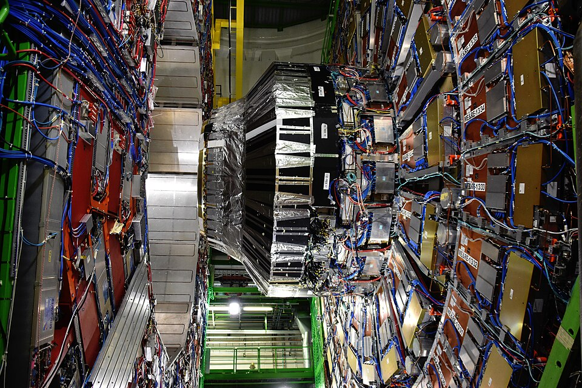

Important Experiments

Experimental Physics is the branch of physics that focuses on observing, measuring, and understanding natural phenomena through experiments. It involves designing and conducting tests to verify scientific theories, discover new principles, and explore the behavior of matter and energy. Experimental physicists use a variety of instruments and technologies, ranging from simple laboratory equipment to advanced particle accelerators and space telescopes. Their work plays a crucial role in expanding scientific knowledge, improving existing theories, and developing innovative technologies that benefit society. Through careful observation and data analysis, experimental physics helps bridge the gap between theoretical predictions and real-world evidence. Some of the most important experiments in physics are listed below.
- Rømer's determination of the speed of light
- Cavendish experiment
- Eötvös experiment
- Michelson–Morley experiment
- Oil drop experiment
- Geiger–Marsden experiment
- Eddington experiment
- Franck–Hertz experiment
- Stern–Gerlach experiment
- Double-slit experiment
- Gravity Probe A and Gravity Probe B
- Bell test experiments